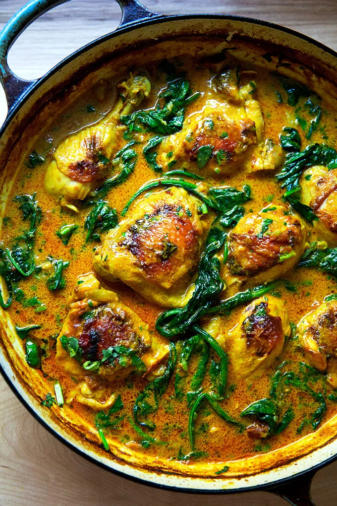

Curry Chicken

Description
A recipe familiar in all Malaysian households, this Indian-inspired creamy chicken curry
recipe is similar to a curry I had in India. The aromatic spices and flavors
are a delight to the senses! Delicious with fresh naan and basmati rice.
Ingredients
- 3 tablespoons olive oil
- 1 small onion, chopped
- 2 cloves garlic, minced
- 1 teaspoon ground cinnamon
- 1 teaspoon paprika
- 1 bay leaf
- 1/2 teaspoon white sugar
- 2 skinless, boneless chicken breast halves-cut into bite-size pieces
Steps
- Heat olive oil in a skillet over medium heat. Sauté onion until lightly browned.
- Stir in garlic, curry powder, cinnamon, paprika, bay leaf, ginger, sugar, and salt. Continue stirring for 2 minutes.
- Add chicken pieces, tomato paste, yogurt, and coconut milk. Bring to a boil, reduce heat, and simmer for 20 to 25 minutes.
- Remove bay leaf, and stir in lemon juice and cayenne pepper. Simmer 5 more minutes.
Back to homepage